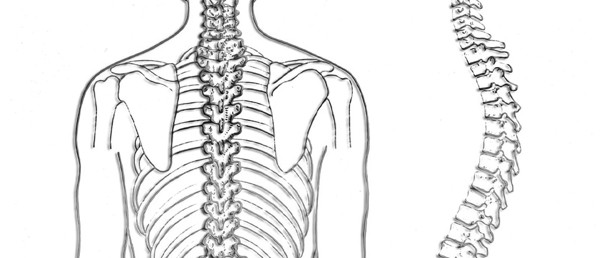

جراحة العمود الفقري والاعصاب
يُعدُّ التصوير بالرنين المغناطيسي المعيار الأساسي لتشخيص جميع مشاكل العمود الفقري وبناء عليه يتم التخطيط لعملية جراحة العمود الفقري بتحديد الفقرات المتضررة
دعنا نتصل بك

تركيب القشور الخزفية في تركيا
علاج الأسنان في تركيا يستند إلى أحدث التقنيات في طب وجراحة الأسنان، مثل القشور الخزفية بأنواعها، وذل...
تشخيص و جراحة الجنف في تركيا
في حالة الجنف يظهر التواء في العمود الفقري نحو أحد جانبي الجسم وغالباً ما يظهر خلال فترة النموّ المت...
العلاج الإشعاعي في تركيا
يعمل فريق العلاج الإشعاعي للأورام يداً بيد مع فريق متكامل متعدّد التخصّصات من أطباء وجراحين وفريق تم...
عملية الفيمتو سمايل
تعتبر تقنية سمايل التقنية الأحدث في عمليات تصحيح الأخطاء البصرية الانكسارية بالليزر وتتضمّن عمل شقٍّ...
نتعرّف معاً في هذا المقال على ماهيّة العمود الفقري، وطبيعة المشاكل التي تصيبه، والأعراض التي يمكن أن تنجم عن أيّة مشاكل في عمله.
جدول المحتويات
العمود الفقري والاعصاب
العمود الفقري هو عبارة عن سلسلة متصلة من الفقرات: 7 عُنقية، و 12 صدرية، و 5 قَطَنية، تتّصل في الأعلى مع الجمجمة، وفي الأسفل مع الحوض.
تتكوّن الفقرة الواحدة من جزء أمامي صلب، يُسمى جسم الفقرة، وحلقة عظمية دائرية، تكون خلف جسم الفقرة.
تشكل هذه الحلقة عبارة عن قناة يمرُّ فيها النخاع الشوكي والأعصاب الشوكية، وتسمى القناة الناتجة عن الحلقات المتتالية بالقناة الشوكية (spinal canal).
بين كلّ فقرة والتي تليها يوجد قرص غضروفي، يعمل كآليّة ماصَّة للصدمات، وهو عبارة عن حلقات غضروفية دائرية مرتّبة، الواحدة بداخل الأخرى، وبداخل الحلقة الداخلية مادة جيلاتينيّة في مركزها.
مع تقدُّم العمر واستهلاك الفقرات والمفاصل ما بينها، تحدث تغيُّرات تنكّسية في العمود الفقري، والأقراص الغضروفية التي بين الفقرات، حيث تفقد تلك الأقراص المحتوى المائي، ويحدث ضعف في بعض الحلقات، ما يؤدي إلى فتق في المادة داخل الحلقات، إلى داخل القناة الشوكية أو مخارج الأعصاب، ما يؤثر سلباً على العصب ويسبب تهيُّجه.
بالإضافة إلى ذلك، يمكن أن يحدث للمفاصل ما بين الفقرات تغيُّرات تنكّسيَّة قد تؤدي إلى تضيُّق في القناة الشوكية ومخارج الأعصاب، ما يضغط على الأعصاب ويسبِّب بعض الألم في الأرداف ومنطقة الساق، وقد تحدث هذه التنكّسات في أيّ مستوى من العمود الفقري، ولكن غالباً ما تحدث في الفقرات العنقية أو القطنية.

ما أعراض مشاكل العمود الفقري والأقراص الغضروفية؟
مشاكل العمود الفقري العنقي
ومن أعراضه حدوث ألم في الرقبة، بالإضافة إلى أعراض أخرى ناجمة عن الضغط على مخارج الأعصاب الشوكية، مثل:
- ضعف في اليد أو الذراع.
- تنميل وخَدَر في أحد اليدين أو الذراعين.
- آلام وشعور بحُرقة في أحد اليدين أو الذراعين.
مشاكل العمود الفقري القطني
ومن أعراضه حدوث ألم في أسفل الظهر، بالإضافة إلى أعراض أخرى ناجمة عن الضغط على مخارج الأعصاب الشوكية، مثل:
- حدوث آلام بارقة، تمتدّ إلى الأطراف السفلية، وخاصةً إلى منطقة ما تحت الركبة.
- ضعف في أحد الأطراف السفلية.
- خدر وتنميل في أحد الأطراف السفليّة.
- في حالات متقدّمة، قد تحدث مشاكل في التبوّل، كسَلس البول أو انحباسه، أو خدر في منطقة العجان، وفي هذه الأحوال يتوجب التدخل الجراحي بشكل عاجل.
وعندما تفشل العلاجات غير الجراحية في السيطرة على الألم، أو في حال حدوث ضعف شديد في الجسم، يصبح الخيار الجراحي ضرورياً لا بد منه.
كيف يتم تشخيص مشاكل العمود الفقري؟
يعدُّ التصوير بالرنين المغناطيسي المعيارَ الأساسي لتشخيص جميع مشاكل العمود الفقري، وبناء عليه يتم التخطيط للعملية، وتحديد الفقرات المتضرّرة، والمكان المطلوب إجراء العملية فيه.
قبل عملية العمود الفقري
يقوم الفريق الطبي بتحرّي التاريخ المرضي والجراحي للمريض بالتفصيل، والتأكّد إن كان المريض يعاني من بعض الحساسية ضدّ بعض العلاجات، وتُجرى كذلك بعض التحاليل الروتينية على عيِّنات من دم المريض.
وتشمل الرعاية ما بعد العملية: العناية بالجرح، وتخفيف الألم، وبعض العلاج الطبيعي. وفي اليوم التالي للعملية يمكن للمريض الخروج من المشفى ليُكمل فترة الاستشفاء في منزله.
مضاعفات عملية العمود الفقري
تعدُّ عمليات العمود الفقري للظهر والرقبة عمليات آمنة، ولكن مثل أي عملية فهي لا تخلو من المضاعفات المحتملة، ولكن نسبتها قليلة لا تتجاوز 5%.
مضاعفات عمليات العمود الفقري القطنية
- مضاعفات التخدير.
- التهاب في الجرح.
- إصابة الأعصاب.
- إصابة الأم الجافية وسيلان في السائل الشوكي.
- استمرار الأعراض الألم التي كانت قبل العملية في حلات قليلة.
مضاعفات عمليات العمود الفقري العنقية
- حدوث التهاب في الجرح.
- مضاعفات التخدير.
- ألم في الرقبة.
- إصابة الأعصاب.
- مشاكل في البلع.
ما بعد عملية العمود الفقري
يستطيع المريض العودة إلى حياته الطبيعية بعد العملية، وممارسة جميع الأنشطة غير الشاقّة، طالما كانت تلك الأنشطة لا تسبب ألماً، ورغم ذلك، من الأفضل تجنُّب أي أعمال شاقة، مثل: الركض، أو رفع الأوزان، أو الرياضات العنيفة الأخرى.
جراحة العمود الفقري في تركيا
استشر أطباءنا في علاجك الطبية، لنقدّم لك استشارة مجانيّة بخصوص عمليّات العمود الفقري، أرسل لنا صور الأشعة السينية، والرنين المغناطيسي، وتقاريرك الطبية، وفي حال كانت العملية هي الخيار الأنسب؛ نرتِّب لكم رحلتكم العلاجية لتركيا، من لحظة وصولكم إلى المطار، انتقالاً إلى العملية الجراحية والعلاج الفيزيائي، ونرافقكم في كافة مراحل رحلتكم العلاجية، حتى لحظة عودتكم بأفضل النتائج وأنتم بصحة وعافية بإذن الله.
هل لديك إستفسار : تواصل معنا - الإستشارة مجانية
علاجك الطبية .. لتكن الصحة تاجك.